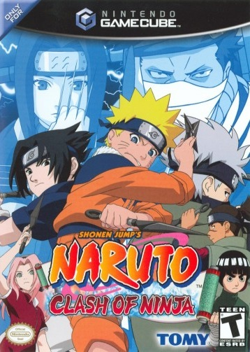

The Internet is Serious Business!
Home > Video Games > GameCube > Naruto: Clash of Ninja/Naruto: Gekitō Ninja Taisen! Series > Naruto: Clash of Ninja
Note that this page is about the first game in the series, which, somewhat confusingly, shares the same name with the entire series. I am specifically talking about the North American release of the game, the one with this cover art:

This game was released in North America on 7 March 2006; by then, Naruto had been airing in the United States for several months, and I had already become a dedicated Narutard, so I bought the game soon after its release.
It didn't manage to keep me occupied for a very long period of time: I played it rather intensively and enjoyed it for about a week or two before I grew bored of it. The game has only 10 playable characters, three of which need to be unlocked. As for game modes, there are only score attack, time attack, survival, a story mode, training, versus computer, and player-versus-player; besides the last one, which is a 2-player mode, all the others are single-player only. There are no 4-player modes at all, nor (if you have played the sequels) three-man squad, mission, shadow fighting, and computer-versus-computer modes. Compared to Naruto: Gektiō Ninja Taisen! 3 and Naruto: Gektiō Ninja Taisen! 4 (and perhaps even Naruto: Gektiō Ninja Taisen! 2), which have many more playable characters and game modes, Naruto: Clash of Ninja feels to me more like a demo than a full game.
Still, in this first game of the series, the developers did manage to nail the core mechanics of the fighting system, as well as the cel-shaded graphics, both of which are present in all of the sequels with little modification. (The main menu soundtrack is also my favorite out of all the four GameCube games in the series; it's definitely more nostalgic for me than the other main menu themes.) By itself, I found Naruto: Clash of Ninja to be a good game at its core, with a solid fighting system but quite lacking in content; there is too little to do, and it has much unfulfilled potential. Fortunately, this game laid a solid foundation for the entire series, and after finishing it, I was hooked and wanted more. A few months later, when I learned about the sequel, I did not hesitate to buy it.


 All written materials on this Web site are my own, and all are released under the Do What the Fuck You Want to Public License Version 2.
All written materials on this Web site are my own, and all are released under the Do What the Fuck You Want to Public License Version 2.
This page last modified on 28 March 2021.